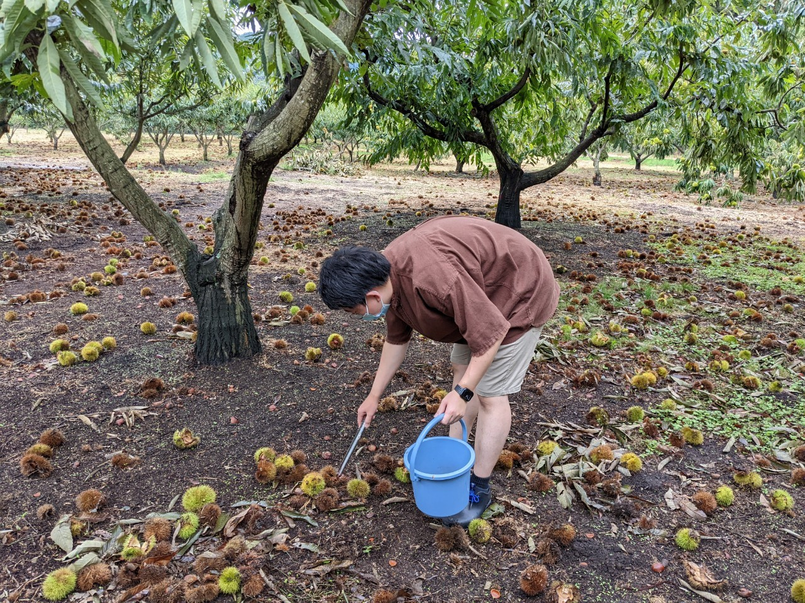
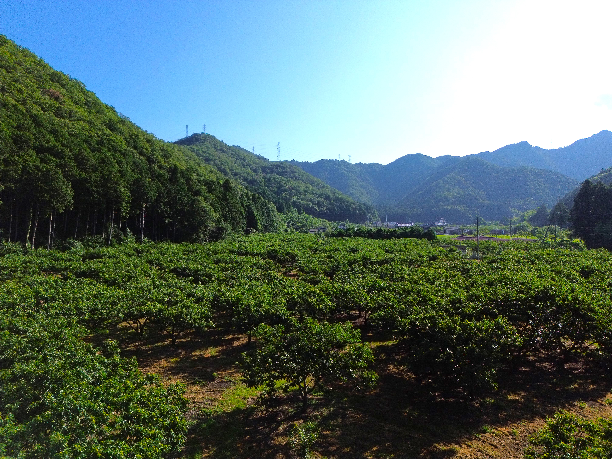
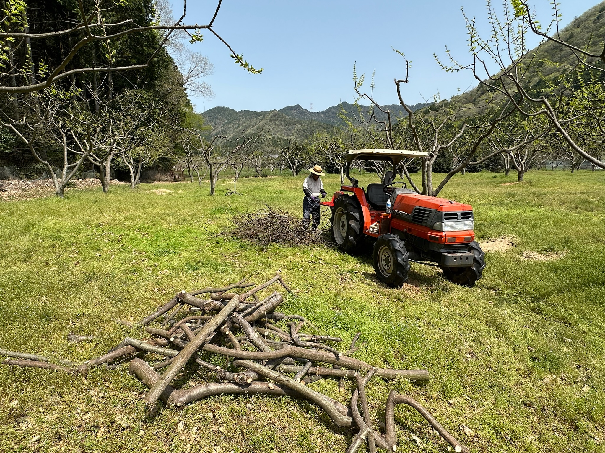
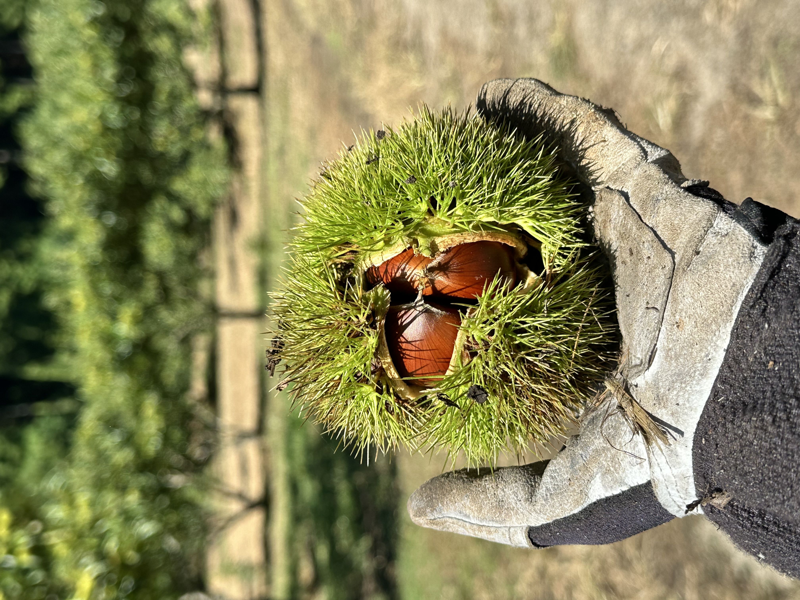
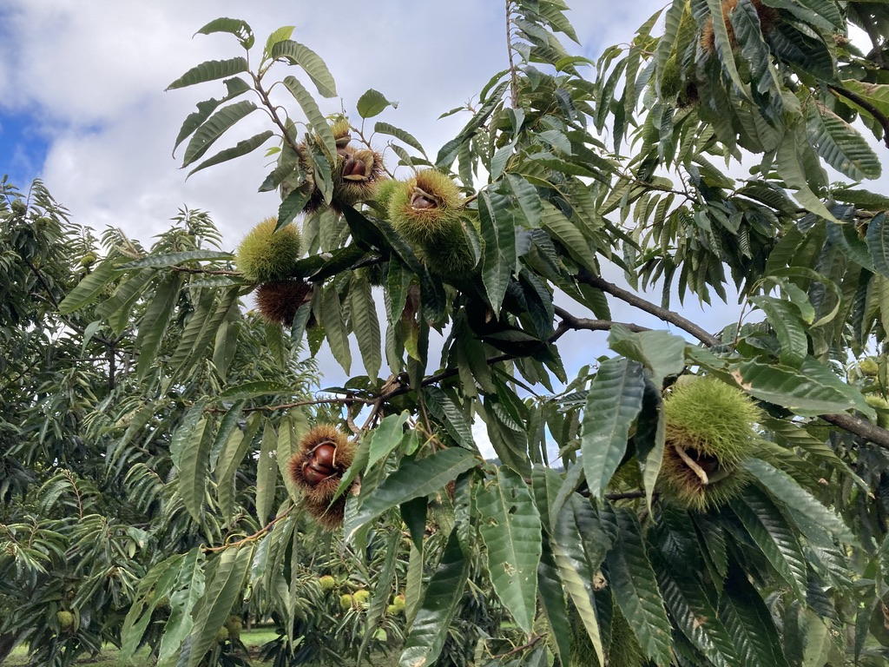
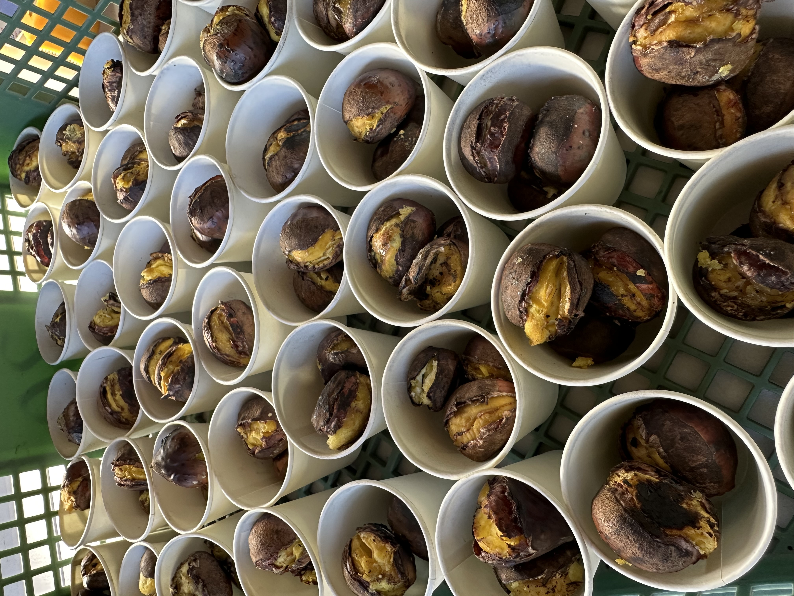
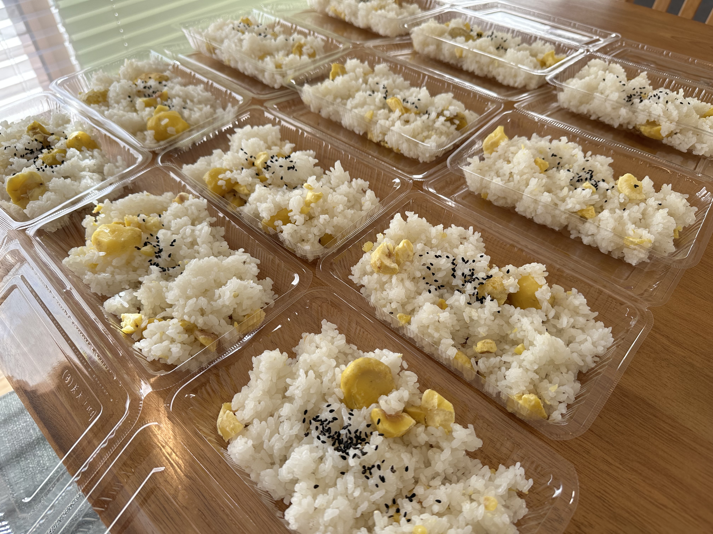
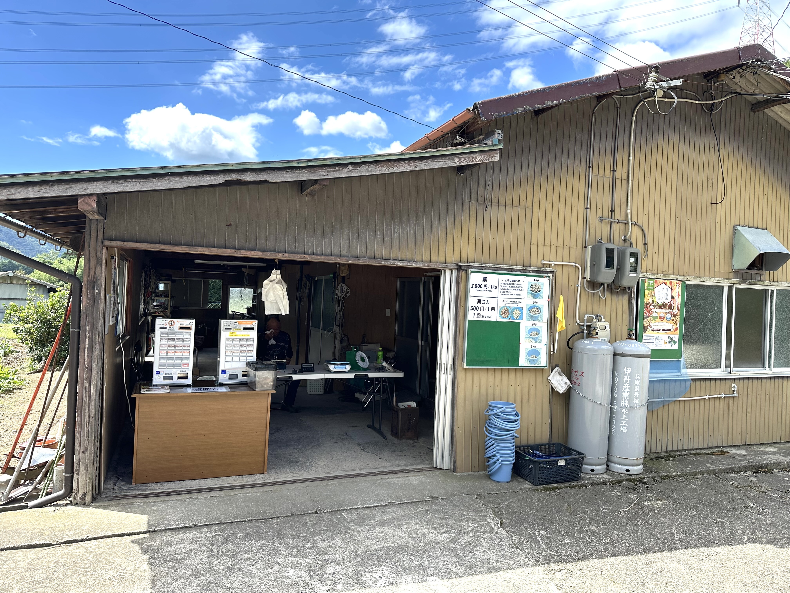
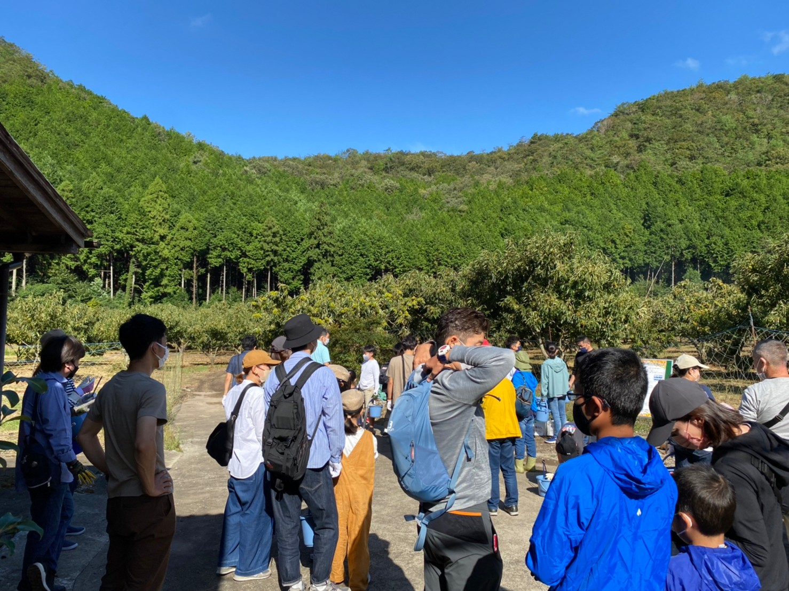

開園期間中は、ご予約なしでご来園いただけます。
Story
栗園の思い
この栗園は、四代にわたり、丹波の自然に寄り添いながら栗づくりを続けてきました。
曾祖父の代から受け継がれてきた「良い栗を育てたい」という想いは、季節を重ねても今も変わることはありません。
これからも、丹波の四季と向き合いながら、訪れる方の記憶に残る秋を思い描きながら、一歩一歩丁寧に栗づくりを続けていきます。
屋号・代表・はじまり
屋号: 福田観光栗園
代表: 横田 大成
はじまり: 昭和50年ごろ
Tamba Chestnut Picking
四代続く栗園で、丹波の秋を味わう栗拾い体験。自然の中を歩きながら、 ゆったりと季節の味覚を楽しめます。
開園期間中は、ご予約なしでご来園いただけます。
お支払いは現金でのご対応をお願いいたします。
お車でもお越しいただきやすい環境です。
栗の生育状況により時期が前後することがあります。
平日 9:00〜14:00 / 土日祝 9:00〜12:00
About
家族でも、ご夫婦でも、お一人でも。自然の中を歩きながら、季節の味覚を楽しめます。
“福田観光栗園”では、丹波の自然に囲まれた栗園で、秋の味覚「栗拾い」を体験していただけます。
園内には緩やかな起伏があり、無理のないペースで歩きながら季節の移ろいを感じていただけます。
お子さま連れのご家族をはじめ、ご夫婦やご友人同士、お一人で訪れる方もいらっしゃいます。 それぞれのペースで、丹波の秋と栗拾いをお楽しみください。
受付時間内であれば、ご予約なしで体験していただけます。
受付で流れや注意点をご案内するので、初めての方でも安心です。
丹波の空気や景色の中で、季節ならではの時間を過ごせます。
Gallery
来園前に園内の雰囲気が伝わるよう、季節の景色や体験の様子を写真でまとめています。







Steps
受付からお持ち帰りまで、初めての方でもわかりやすい流れでご案内しています。

ご来園後、受付にて栗拾いの流れや注意点をご案内します。初めての方でも安心して始められます。

園内を自由に歩きながら、地面に落ちた栗を拾っていただきます。自然の中の散策もお楽しみください。
拾った栗は受付で計量し、お持ち帰りいただけます。焼き栗や栗ご飯もあわせてお楽しみいただけます。
Pricing
必要な料金が見つけやすいように、シンプルにまとめています。
入園料として、お一人500円です。
拾った栗は、その日のご案内にて計量後にお支払いいただきます。
焼き栗 1カップ 200円 / 栗ご飯 1つ 500円 / 栗の皮むき 1回 500円（1回につき1kgまで）
Before You Visit
初めての方にもわかりやすいよう、事前に知っておきたいことをまとめました。
園内のお手洗いは、男女それぞれ1か所ずつとなっております。混雑を避けるためにも、 ご来園前に道の駅やサービスエリアでお手洗いをお済ませいただくことをおすすめしています。
当園は予約制ではありません。開園期間中は、体験時間内であればご予約なしでご来園いただけます。 栗の生育状況を事前に確認いただくことをおすすめします。
Story
この栗園は、四代にわたり、丹波の自然に寄り添いながら栗づくりを続けてきました。
曾祖父の代から受け継がれてきた「良い栗を育てたい」という想いは、季節を重ねても今も変わることはありません。
これからも、丹波の四季と向き合いながら、訪れる方の記憶に残る秋を思い描きながら、一歩一歩丁寧に栗づくりを続けていきます。
屋号: 福田観光栗園
代表: 横田 大成
はじまり: 昭和50年ごろ
News
園内の作業や季節の様子など、最新のお知らせを掲載しています。
園内では、栗の木の剪定を進めています。今年も元気に育ってくれるよう、一本ずつ様子を見ながら手入れをしています。
Access
ご来園前の確認や、最新情報のチェックにご利用ください。